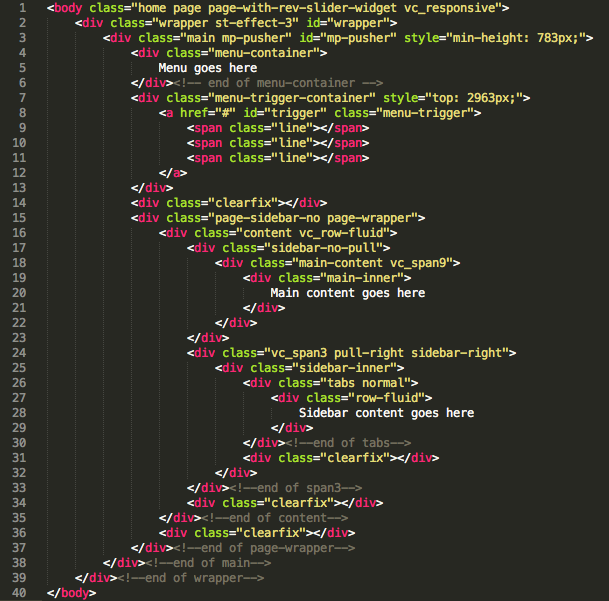
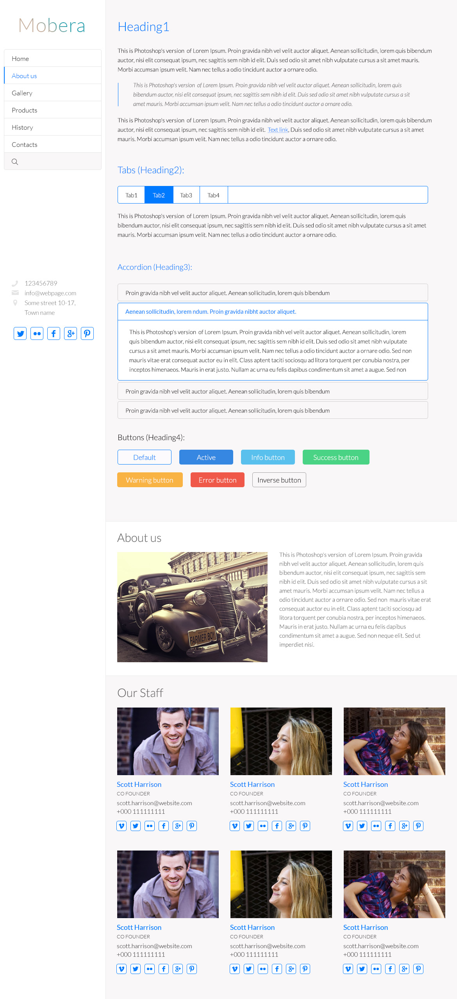
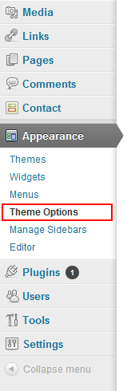
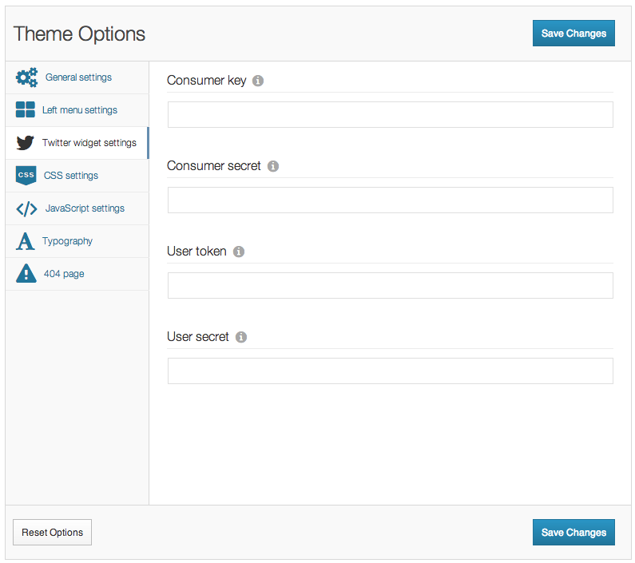
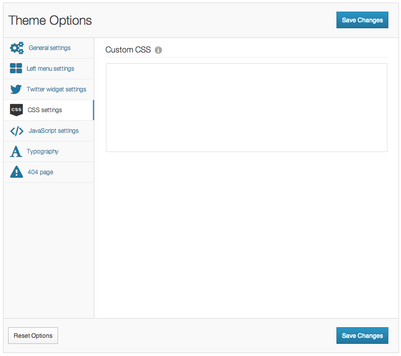
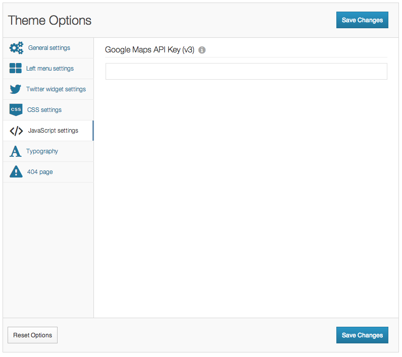
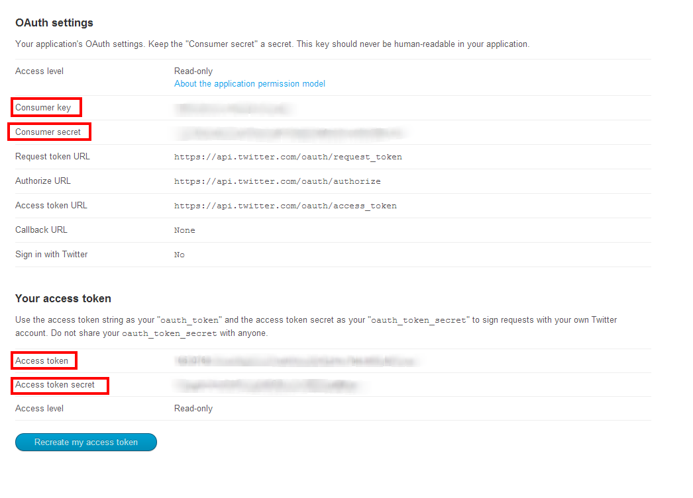

Thank you so much for purchasing this theme. I will be glad to help you if you have any questions relating to this theme. No guarantees, but I'll do my best to assist. If you have a more general question relating to the themes on ThemeForest, you might consider visiting the forums at http://www.cohhe.com/support
The newer method using your Wordpress Admin panel:
Updating is exactly like installing except you are using newer files. So once you have the newest version from your downloads on themeforest, unzip that main folder you just downloaded and inside you'll have the documentation, license etc. There will also be "Mobera.zip".
You can use the wordpress admin to upload and install that zip file or unzip the file and upload via FTP right on top of the old theme files.
Before importing demo data you need to install Contact Form 7 plugins to prevent errors.
IMPORTANT: It will be much easier to understand how this theme works if you will import demo content as an example data in your wordpress. You can play around with this data and get idea how to get each feature working like on demo page.
"Primary menu" is used for side toolbar menu.
This theme is a fixed layout with two columns. All of the information within the main content area is nested within a div with an class of "main-content". The sidebar's (column #2) content is within a div with an class of "sidebar-right". The general template structure is the same throughout the template. Here is the general structure.

.wrapper .main-content p {
color: #someColor;
}
.wrapper .main-content .one_half p {
color: #someColor;
}
First and most important CSS file called style.css contains all of the specific stylings for the page. The file is separated into sections using:
/* Structure */ some code /* Header */ some code /* Sidebar */ some code etc, etc.
I've included four psds with this theme:

This theme comes with a very powerful options panel. After the theme is installed you can access the options panel by logging into the Wordpress dashboard and clicking Appearance > Theme Options. All options are extremely self explanitory.

In General Settings section you can set most used settings.
In Twitter widget Settings section you can configure your twitter widget. Without this configuration Twitter widget will not work. More information how to configure it you can find in section "Configure twitter widget".

In CSS Settings section you can add custom CSS.

In Javascript Settings section you can add Google Maps API Key v3, which later will be used for Google Maps widget.

In Typography section you can configure font size, line height for the fonts.
You can choose for different font types, set font style and font color.
Please keep in mind that CSS3 fonts and Google fonts use a technique which is not supported in IE7/8.
In 404 page section you can set the page title and message that is displayed on the 404 Error Page.
Now you should see all your API keys that is required for your twitter widget. See screenshot below.

For a full list of shortcodes and example usages please go to Mobera demo website and see Shortcodes section.
A common complaint about the edit posts, pages, media, links, categories, tags and users pages is that there is no easy way to see the ID of the specific item. This plugin (Reveal IDs) will add a new column titled 'ID' that will display each items ID.
This theme is compatible with the falowing plugins:
I've used the following images, icons or other files as listed.
{kind=link}